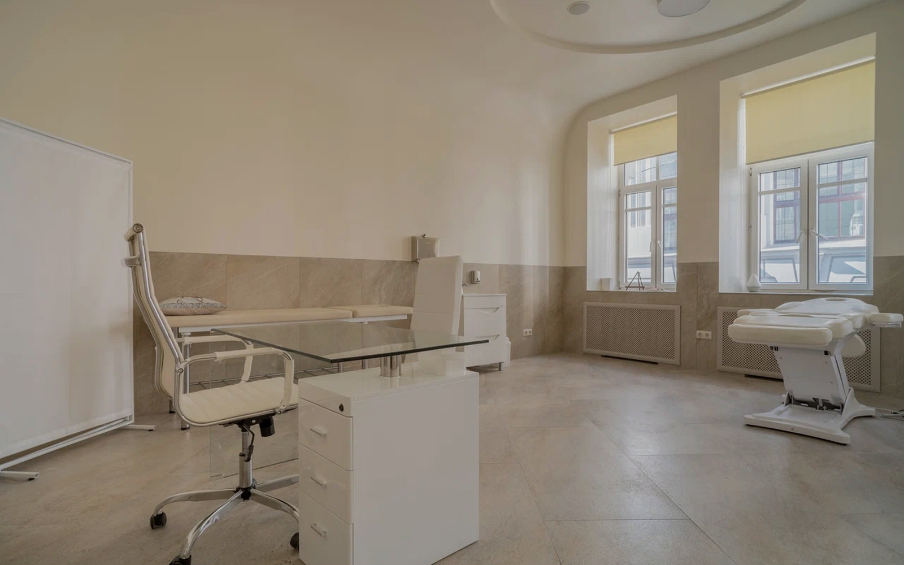
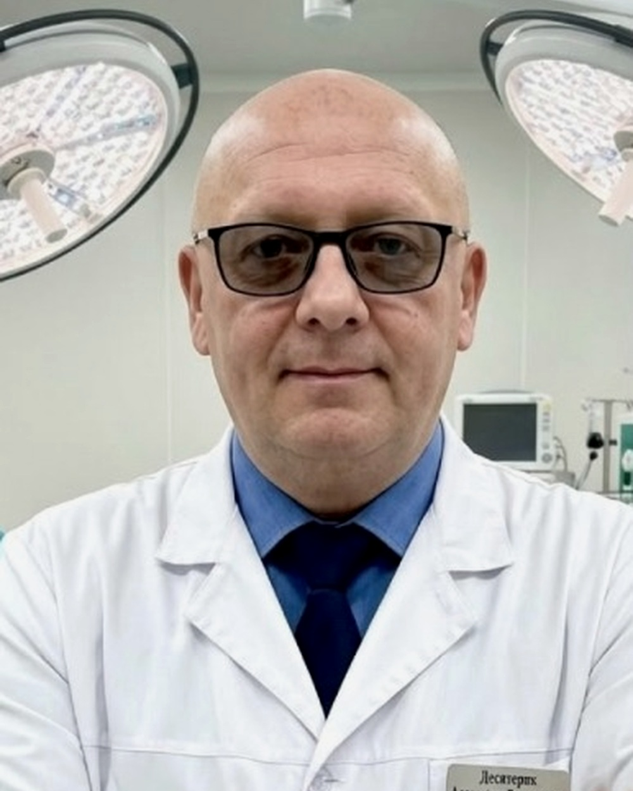
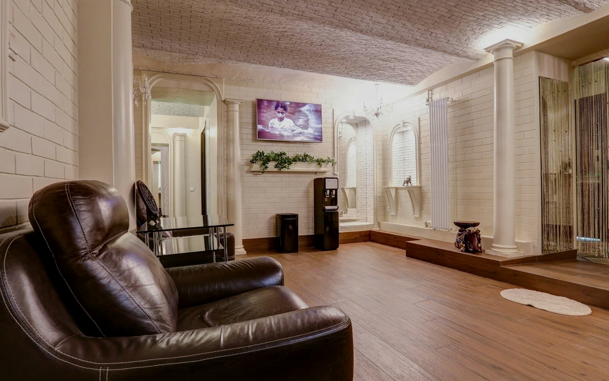
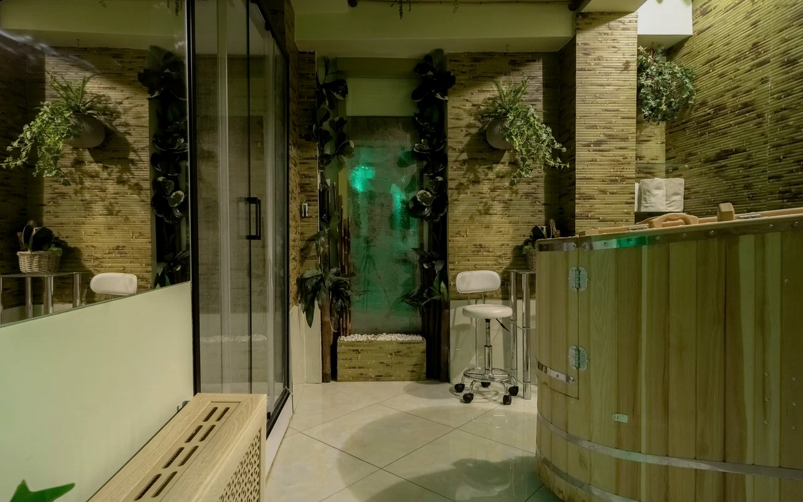

Диагностика
Аппаратная и классическая диагностика, консультация и определение дальнейшей тактики.

Москва · Арбат · Филипповский переулок, 18
Институт традиционной восточной медицины на Арбате. Диагностика, лечение, восстановительная медицина и комплексные программы — в одном медицинском центре.

Подход
На официальном сайте ИТВМ представлены классические медицинские направления, восстановительная медицина и методы традиционной восточной медицины. В этой версии сайта они собраны в понятный для пациента маршрут.
Аппаратная и классическая диагностика, консультация и определение дальнейшей тактики.

Медицинские назначения и методы лечения подбираются по показаниям и задаче пациента.

Реабилитация, массаж, физиотерапевтические и восстановительные процедуры.

Направления
Ключевые медицинские направления с официального сайта ИТВМ. Без перегруженного каталога — сначала задача пациента, затем специалист и метод.
Аппаратная и классическая
↗ 02Реабилитация и восстановление
↗ 03Женское здоровье
↗ 04Нервная система и болевые синдромы
↗ 05Консультации для детей
↗ 06Комплексная медицинская помощь
↗ 07Эстетическая медицина
↗
Медицина в центре Москвы
«Клиника должна восприниматься как медицинское пространство — спокойно, точно и без визуального шума.»
Дизайнерская концепция варианта B
Методы лечения
На сайте ИТВМ перечислены рефлексотерапия, иглоукалывание, ТЭС-терапия, кинезиотерапия, Су-джок, массаж Туйна и другие методы. Здесь показаны основные — как часть общей лечебной программы.

Воздействие на биологически активные точки с помощью акупунктурных игл.
Методы воздействия на активные точки организма в составе лечебной программы.
Неинвазивная транскраниальная электрическая стимуляция — физиотерапевтический метод.
Метод, связанный с движением человека и восстановлением двигательных функций.
Воздействие на рефлекторные точки кистей и стоп.
Традиционный точечный массаж, применяемый в восточной медицине.
Специалисты
Знакомство с клиникой начинается с людей. Ниже — часть команды, представленной на официальном сайте ИТВМ.

Главный врач Института традиционной восточной медицины.

Руководитель департамента по науке и инновациям, к.м.н., доцент.

Врач гинеколог-репродуктолог высшей квалификационной категории, д.м.н., профессор.

Врач венеролог-дерматолог высшей квалификационной категории, д.м.н.
Отдельное пространство ИТВМ
Термальный курорт и ингаляционное отделение в центре Москвы — так программа представлена на официальном сайте клиники.
Открыть Palazzo TermaleПространство
Вместо стоковых медицинских образов — реальные фотографии клиники. Интерьер становится частью доверия к месту.



Запись в клинику
Москва, м. Арбатская
Филипповский переулок, 18